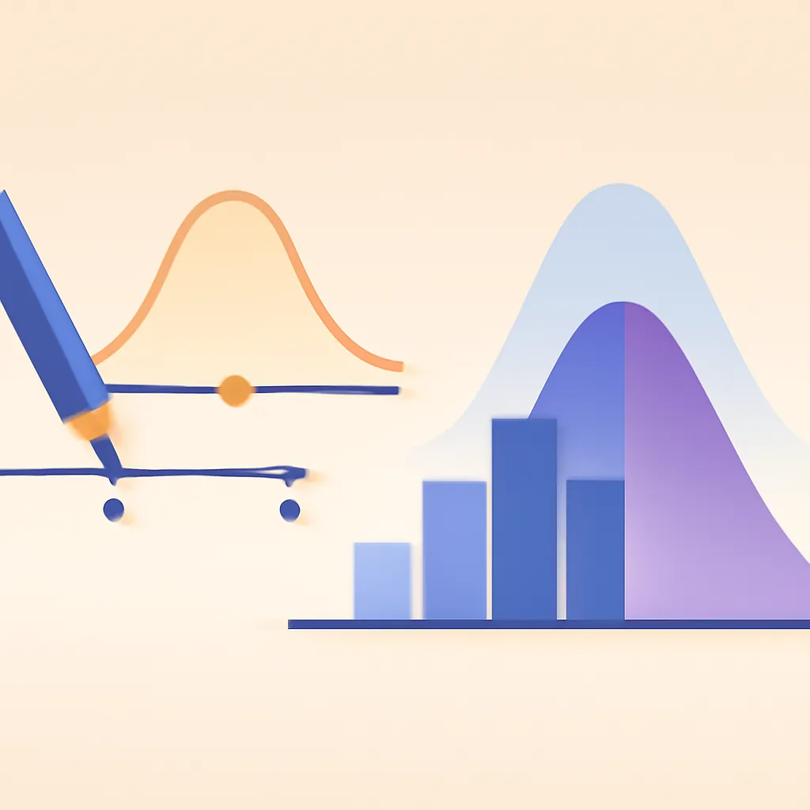

대표 글Featured · 데이터분석
SQL 첫걸음: 데이터에게 질문하는 법
SQL을 통해 데이터와 소통하는 방법을 배워보세요. 효율적인 쿼리 작성과 데이터베이스 설계의 핵심을 다룹니다.
기술과 데이터로 공공의 일상을 잇는 기록.Notes on tech and data for the public sector.
SQL을 통해 데이터와 소통하는 방법을 배워보세요. 효율적인 쿼리 작성과 데이터베이스 설계의 핵심을 다룹니다.
공유재산 현황 한 눈에…전남광주, 전국 첫 GIS 통합관리 광주타임즈 📰 원문 보기: 공유재산 현황 한 눈에…전남광주, 전국 첫 GIS 통합관리 - 광주타임즈
전남광주, 디지털공간정보 활용해 공유재산 통합관리 v.daum.net 📰 원문 보기: 전남광주, 디지털공간정보 활용해 공유재산 통합관리 - v.daum.net
이미지 생성 AI 도구들을 용도별로 분석하여 각각의 특징과 활용 방법을 소개합니다. 프로젝트에 맞는 최적 도구를 선택해보세요.
서울 외곽 개발 위기에서 버퍼, 중첩 등의 공간 분석으로 해결점을 찾습니다. 다양한 기법의 실무적 가치 탐구.
계정과 권한 관리를 위한 기본 원칙을 소개합니다. 최소 권한 부여와 역할 기반 접근 제어 등 실수 방지 전략을 확인하세요.

데이터분석평균, 중앙값, 분산의 개념을 쉽게 이해하고 실무에서 통계 지표를 적절히 활용하는 방법을 알아보세요.
AI 에이전트는 실무에서 반복 작업을 자동화하며, 데이터 품질과 사용자 인터페이스에 주의해야 합니다.
지오코딩은 주소를 정확한 좌표로 변환하는 기술로, 특히 배달 서비스에서 중요합니다. 각 API의 특성과 전처리를 고려해야 합니다.
제로 트러스트는 누구도 기본적으로 신뢰하지 않으며, 지속적인 인증과 승인 절차를 통해 보안을 강화하는 전략입니다.